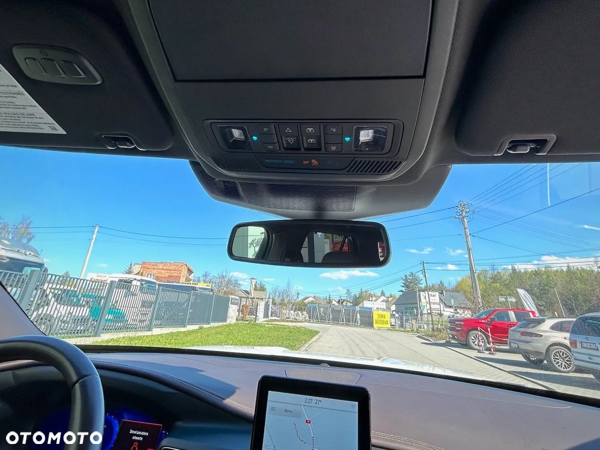
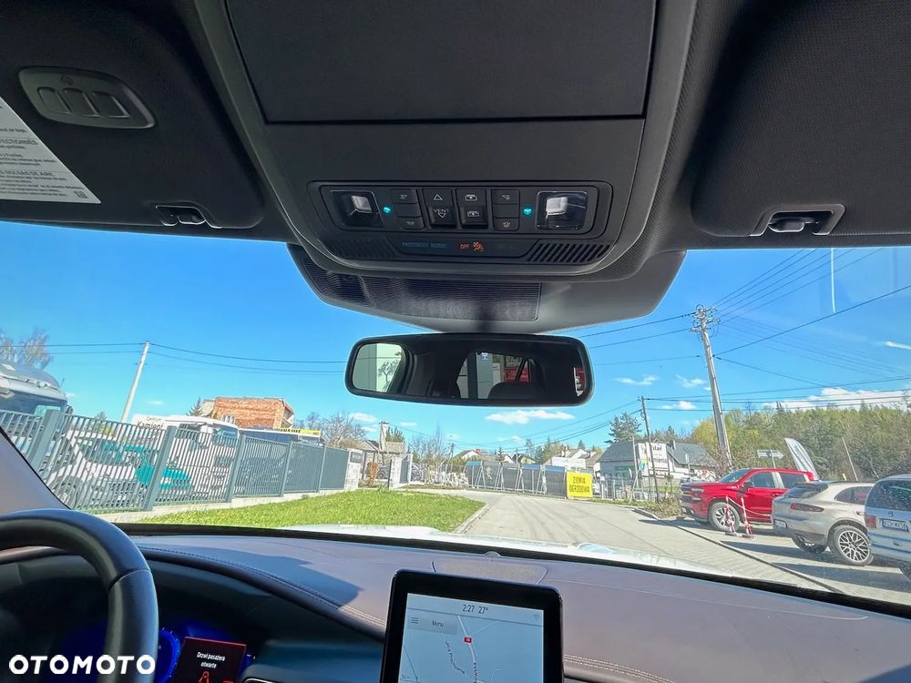

Ekskluzywna wersja Forda Explorera, dedykowana bogatym ranczerom z Teksasu, już dostępna w otwartej sprzedaży! WARTO!
Egzemplarz praktycznie nowy, z bardzo niskim przebiegiem! Dostępny "od ręki" w AutoDiscover Krzeszowice (Krakowska 17, Nawojowa Góra). Zapraszamy na oględziny i przymiarkę do auta!
Pod względem wyposażenia czy jakości materiałów, edycja King Ranch przewyższa specyfikacje Limited i ST, ale korzysta z tego samego, wyśmienitego, bo ponad czterystukonnego silnika Ecoboost twin-turbo!
Wnętrze Explorera King Ranch posiada wszystkie zalety fordowskiego SUVa - m.in. fotele wentylowane fotele przednie, kapitańskie drugiego rzędu, cyfrowe zegary, multimedia SYNC3 z pionowym wyświetlaczem, system kamer 360, nagłośnienie Bang & Olufsen, reflektory LED, bagażnik 515-1356 litrów.
Ponadto auto zostało doposażone o luksusową, dwukolorową tapicerkę skórzaną Del Rio w kolorze Mesia/Norias (fotele, deska, boczki) z perforowanymi wstawkami w kształcie lassa oraz wstawki akcentowe z naturalnego drewna Sapele. To materiały zarezerwowane wyłącznie dla wersji King Ranch, niedostępne w innych specyfikacjach!
Sam samochód pomalowany został efektownym, wielowarstwowym lakierem Tri-Coat w kolorze Star White, który kapitalnie kontrastuje z luksusowym wnętrzem! Na żywo auto wygląda jeszcze lepiej niż na zdjęciach - zapewniamy!
Wyposażenie (wybrane elementy):
- Silnik: 3.0 GTDI V6 Twin-turbo Ecoboost (404 KM, 562 Nm)
- Skrzynia aut. 10-biegowa SelectShift 10R60
- Napęd: AWD + Terrain Management System
- Koła z lekkich stopów 20 cali z oponami 255/55
- Tapicerka skórzana dwukolorowa Del Rio w kolorze Mesia/Norias
- Deska rozdzielcza i boczki drzwiowe obite skórą Del Rio
- Wykończenie kabiny z naturalnego drewna Sapele
- Fotele przednie multikonturowe podgrzewane, wentylowane i z masażem
- Fotele kapitańskie drugiego rzędu, ogrzewane
- Trzeci rząd siedzeń składany elektrycznie
- Kierownica sportowa obszyta skórą, podgrzewana
- Klimatyzacja automatyczna trzystrefowa
- Dach panoramiczny dwuczęściowy (Twin Panel Moonroof)
- Cyfrowe zegary o przekątnej 12 cali
- Reflektory Signature LED
- Światła przeciwmgłowe + światła tylne LED
- Elektryczna klapa bagażnika
- Lusterka zewnętrze elektryczne, podgrzewane, fotochromatyczne, z pamięcią ustawień
- System multimedialny SYNC3 z pionowym wyświetlaczem centralnym 10.1 cala, nawigacją GPS sterowaną głosem, CarPlay/Android - Auto, USB A/C, AUX, Bluetooth
- Ładowanie bezprzewodowe smartfona
- System audio Bang & Olufsen (14 głośników)
- Kamery 360 Surroud View
- Szyby Privacy (przyciemnione od słupka B)
- Relingi dachowe w kolorze satyny + poprzeczki dachowe
- Poczwórne zakończenie układu wydechowego
- Czujniki deszczu + ciśnienia powietrza w kołach (TMPS)
- Dostęp bezkluczykowy we wszystkich drzwiach samochodu
- System zdalnego odpalania samochodu
- Hak holowniczy z najwyższą wersją pakietu Trailer Tow
- Systemy bezpieczeństwa i asysty kierowcy Ford Co-Pilot360
- System stabilizacji pojazdu przy wietrze bocznym
Auto kupiliśmy w USA od firmy ubezpieczeniowej USAA z uszkodzonym zawieszeniem lewego przedniego koła, maską, drzwiami kierowcy, reflektorami... i naprawiliśmy "na gotowo" w zaprzyjaźnionych warsztatach.
Dokumentację szkody wraz z raportem CARFAX przekażemy zainteresowanym zakupem auta. Podstawimy też wóz na przegląd przedzakupowy do dowolnego serwisu na terenie Krzeszowic, a po uzgodnieniu terminu i kosztów - także w dowolne miejsce w Małopolsce.
Explorer est praktycznie nowy, ze śladowym przebiegiem! W USA auto miało tylko jednego właściciela i przeszło już akcję serwisową związaną z wymianą wadliwej kamery 360 stopni.
POLECAMY EGZEMPLARZ! Ze świeczką szukać podobnego w kraju....
Explorer est praktycznie nowy, ze śladowym przebiegiem! W USA auto miało tylko jednego właściciela i przeszło już akcję serwisową związaną z wymianą wadliwej kamery 360 stopni.
Kontakt w sprawie oferty:
- (Norbert)
- (Mateusz)
- krzeszowice@autodiscover.pl


 
